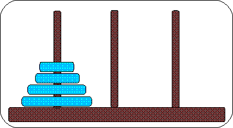
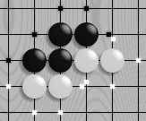
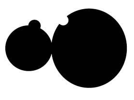
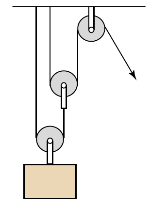
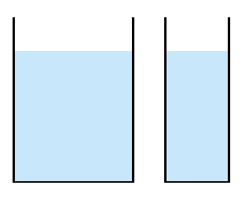
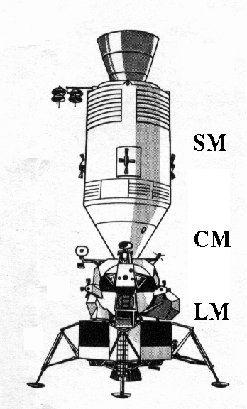
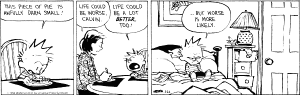

"All organisms with complex nervous systems are faced with the
moment-by-moment question that is posed by life: What shall I do next?"
[This already came up in the context of language.]
[WHY should I do ANYTHING at all?...
Recall the
dependence of motivation on happiness in the model
discussed in Part II.]
"...
[This is part of the second of the so-called Four Noble Truths preached by the Buddha.]
Warren S. McCulloch, Machines that think and want, Lecture at the American Psychological Association, September 9, 1947.
|  | |
| "All organisms with complex nervous systems are faced with the moment-by-moment question that is posed by life: What shall I do next?" | |

A very small portion of the Tic Tac Toe problem space, which has the
form of a
| game | state space size | remarks |
| Towers of Hanoi | 27 | For 3 disks |
|---|---|---|
| Tic Tac Toe | 26,830 | |
| checkers | 1031 | Checkers has been solved: perfect play by both sides results in a draw. |
| chess | 10123 | Estimated. Compare to the estimated number of atoms in the Universe: 1079 |
| Go | 2.1⋅10170 |  |
Chess
The state space is too large to explore exhaustively;
The poorer moves are discarded (the tree is "pruned"), and the optimal move (given the information at hand) is chosen.
Key concepts:
Challenges and limitations:
Redefining the search space in chess
by
The higher the Elo rating of a player, the larger the difference between his memory for valid board positions and his memory for random positions (from Gobet et al., 2001).
Consider the role of experience/memory (which complements gF) in being smart.
In the Tucker and Ellis task (which is related to the celebrated drinking problem), the subject is required to answer, in each trial, the question "Is this a pitcher?" as rapidly as possible.
Half the subjects answer "yes" by pressing a button on the right and half by pressing a button on the left.
The participants respond faster when the handle is on the same side as the "yes" button (cf. stimulus-response compatibility).

The diagram shows two interlocking gears. Will the knob on the leftmost
gear mesh with the groove on the right gear if the gears are rotated
inward?
[From Mechanical reasoning by mental simulation,
M. Hegarty, Trends
in Cognitive Sciences 8:280-285 (2004).]

The diagram depicts a pulley system. When the free end of the rope is
pulled, will the lower pulley turn clockwise?
[From Mechanical reasoning by mental simulation,
M. Hegarty, Trends in Cognitive Sciences 8:280-285 (2004).]
It takes subjects longer to infer the direction of rotation for the lowest pulley, compared to the middle one.

The diagram shows two glasses of water. The glasses are the same height
and filled to the same water level. If the glasses are tilted, will the
water pour out of the two glasses at the same or different angles of tilt?
If they are tilted at the same rate, which will pour first?
[From Mechanical reasoning by mental simulation,
M. Hegarty, Trends
in Cognitive Sciences 8:280-285 (2004).]
Subjects find it much more difficult to solve this problem when reclining than when sitting upright.
|  | |
| the Apollo spacecraft | "Houston, we've got a problem" [1970] |
Problem solving in "cognition in the wild" relies on some of the same
computational principles and techniques as in artificial situations such
as chess-playing, including:
HOWEVER, the open-ended nature of the real-world situations makes everything more difficult. In particular, "the" search space may be ill-defined and "the" relevant evaluation function may be unknown.
"Cognition in the wild" is often
Remember, a solitary "rocket scientist" is normally of very little use to "rocket science".
"Cognition in the wild" is often
The Apollo 13 mission: PROBLEM SOLVED.
The jury-rigged attachment for the CO2 chemical scrubber filter (square box, held together with duct tape), which had been cannibalized from the crippled Service Module, is shown here after its improvised installation in the Lunar Module.
The tip of the blade was on the edge of my aorta... it came out in the New York Times the next morning that if I had sneezed I would have died... and I want to say tonight, I want to say that I'm happy I didn't sneeze... Because if I had sneezed, I wouldn't have been around here in 1960 when students from all over the South started sitting-in at lunch counters... if I had sneezed, I wouldn't have been here in 1963 when the black people of Birmingham, Alabama aroused the conscience of this nation and brought into being the civil rights bill... If I had sneezed I wouldn't have had the chance later that year in August to try to tell America about a dream that I had had... I'm so happy that I didn't sneeze.
From Mental models and counterfactual thoughts about what might have been, Ruth M. J. Byrne, TiCS 6:426-431 (2002).
The liquid oxygen tank, whose explosion caused the
Apollo 13 accident:
if the tank had not been dropped during transportation (causing the fill line to bend), and if the temperature sensor had not been damaged by being run off 65 instead of 28 volts (causing it to fuse), the contents of the tank would not have overheated when an in-flight "cryo-stir" was attempted, and the explosion would have been prevented.

A couple of down-to-earth examples:
Note connection to forethought/foresight.

The patterns of counterfactuals generated by different people in a given situation are similar to each other.
A likely explanation: this is because they all reflect the same
A memorable expression: counterfactuals follow
"the fault lines of the imagination"
Last modified: Tue Aug 11 2020 at 14:50:09 EDT